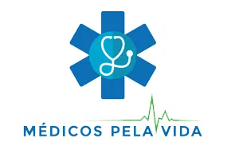
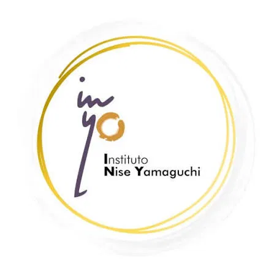
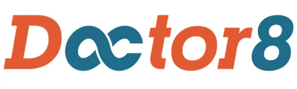
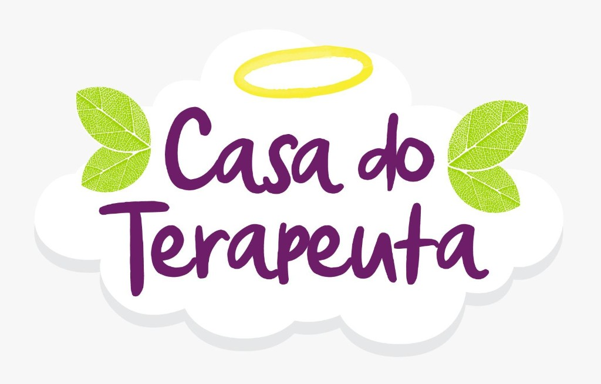
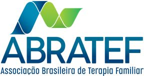
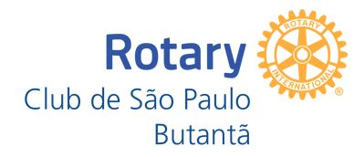
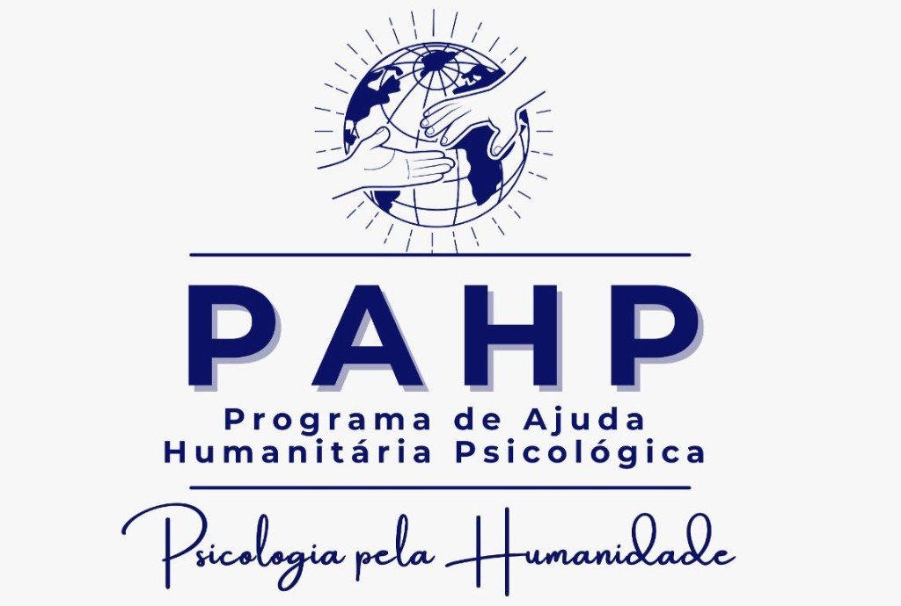
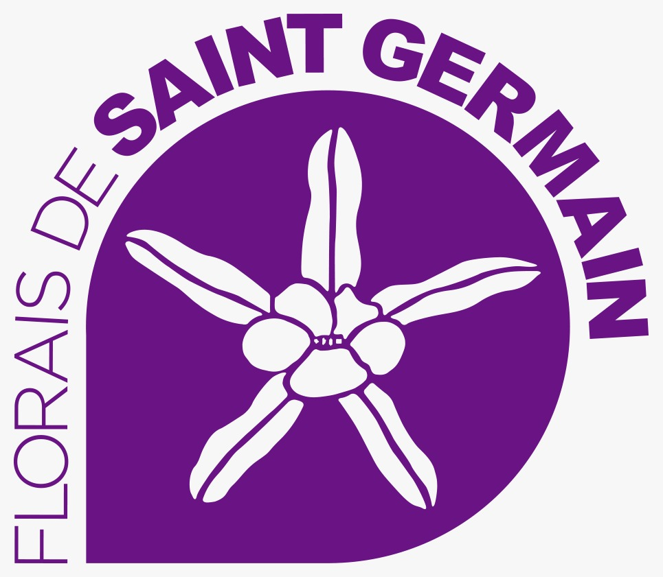
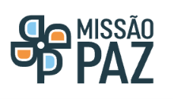

1. Qué pasó
En la tarde del 24 de junio de 2026, el norte de Venezuela fue golpeado por un terremoto doble (doublet) — dos sismos de gran magnitud en un intervalo de menos de un minuto. Según el Servicio Geológico de Estados Unidos (USGS) y autoridades venezolanas:
- Primer sismo: magnitud 7,2 Mw, a las 18:04 (hora local), epicentro a 23 km de San Felipe, estado Yaracuy, profundidad de ~20 km.
- Segundo sismo: magnitud 7,5 Mw, 39 segundos después — el más devastador — epicentro a 28 km al sureste de Yumare, profundidad de ~10 km.
- Intensidad: IX en la escala Mercalli (violento) — el terremoto más potente registrado en la región en más de un siglo.
Los temblores ocurrieron durante feriado nacional (Batalla de Carabobo), con muchas personas en casa o en espacios públicos. Millones de personas sintieron los sismos; estimaciones de la OIM indican que hasta 6,7 millones pueden haber sido afectadas.
*Cifras sujetas a actualización. Equipos de rescate continúan operando en Caracas, La Guaira y regiones adyacentes.
2. Regiones más afectadas
La Guaira
Estado costero declarado zona de desastre. Más de 100 edificaciones colapsaron. Estimación de 70.000 familias afectadas.
Caracas
Capital con daños generalizados, personas atrapadas bajo escombros y hospitales sobrecargados o evacuados.
Miranda y Falcón
Infraestructura dañada, interrupción de servicios básicos y dificultad de acceso a cuidados de salud.
Yaracuy
Epicentro de los sismos. Ciudades como San Felipe y Yumare con destrucción significativa.
Aeropuerto de Maiquetía
Principal aeropuerto internacional del país con operaciones suspendidas temporalmente por daños estructurales.
8 hospitales afectados
Algunas unidades de salud tuvieron que ser evacuadas, agravando la crisis asistencial en el momento de mayor demanda.
3. Necesidades de salud urgentes
Con base en patrones observados en desastres sísmicos de magnitud similar y en la experiencia del SOS Salud RS, las principales demandas incluyen:
3.1. Traumas físicos
- Fracturas, laceraciones y aplastamientos por edificaciones colapsadas.
- Lesiones por caída de objetos y derrumbes parciales.
- Complicaciones en heridos ya atendidos que perdieron acceso a medicamentos o seguimiento.
- Renovación de recetas para enfermedades crónicas (diabetes, hipertensión, asma, etc.) cuando el sistema local está sobrecargado.
3.2. Salud mental y apoyo psicosocial
- Reacción aguda al estrés, pánico, ansiedad y duelo por pérdida de familiares y patrimonio.
- Trastornos del sueño, pesadillas recurrentes y miedo a réplicas sísmicas.
- Primeros auxilios psicológicos para niños, adultos mayores y familias desalojadas.
- Escucha empática y acogimiento para trabajadores de rescate y voluntarios locales.
3.3. Poblaciones vulnerables
- Gestantes, lactantes, adultos mayores y personas con discapacidad en refugios temporales.
- Familias desalojadas sin acceso al sistema de salud local.
- Personas con enfermedades graves que necesitan cuidados paliativos y apoyo continuo.
4. Cómo puede ayudar ACURABRASIL
ACURABRASIL está movilizando su red de voluntarios y replicando el modelo del SOS Salud Río Grande do Sul — proyecto que atendió 2.664 solicitudes de consulta gratuita vía telemedicina durante las inundaciones de 2024 en RS, con triaje por prioridad, atención multidisciplinaria y seguimiento post-consulta.
Para Venezuela, la estrategia es ofrecer consultas médicas y psicológicas en línea gratuitas por medio de la plataforma Doctor8 — software de telemedicina con datos cifrados en la nube, compartición segura de historias clínicas y videollamadas entre profesionales y pacientes.
5. Modelo de atención (basado en SOS Salud RS)
El flujo operacional sigue seis etapas comprobadas en el proyecto gaúcho, adaptadas al contexto venezolano:
Acceso al sistema
La víctima o familiar completa formulario de solicitud con datos, síntomas y necesidades, aceptando el Término de Consentimiento para Telemedicina. Luego, crea registro en Doctor8 (www.doctor8.com.br). Voluntarios (Ángeles) auxilian a quien tenga dificultad con el registro.
Triaje y priorización
Equipo de triaje clasifica casos en filas de alta prioridad (traumas graves, riesgo de vida, crisis psicológica aguda) y atención regular. Los casos se dirigen a las filas de médicos, psicólogos, psicoanalistas o cuidados paliativos según la necesidad.
Encaminamiento
Coordinadores asignan cada paciente al profesional voluntario disponible, enviando ficha completa vía Doctor8 y contacto directo por WhatsApp para agendar la consulta de inmediato.
Consulta por telemedicina
Médicos y psicólogos voluntarios realizan videollamada vía Doctor8: evaluación clínica, orientaciones, prescripciones cuando aplique y derivación a especialidades adicionales si es necesario. Todas las atenciones se registran conforme a las normas del CFM y CRP.
Seguimiento post-consulta
Voluntarios (Ángeles) contactan para verificar si el paciente comprendió las orientaciones, obtuvo medicamentos prescritos y necesita apoyo adicional — medicamentos, refugios, información local.
Cuidados paliativos e integrativos
Equipo multidisciplinario ofrece apoyo a pacientes con enfermedades graves, prácticas integrativas complementarias y escucha psicoanalítica para familias en duelo y sufrimiento prolongado.
6. Quién puede ser voluntario
Siguiendo la estructura del SOS Salud RS, buscamos profesionales de la salud y apoyo en diversas modalidades:
Médicos
Registro activo en CFM/CRM. Atención clínica y discusión de casos. Verificación de credenciales antes del ingreso.
Psicólogos
Registro activo en CRP. Experiencia en urgencia, emergencia y primeros auxilios psicológicos.
Psicoanalistas
Atención psico-espiritual y escucha profunda para víctimas en crisis de duelo y trauma.
Terapias Integrativas
Profesionales de prácticas integrativas complementares para apoyo holístico a víctimas en situación de estrés y trauma.
PICS
Profesionales de Práticas Integrativas e Complementares en Saúde (PICS) para atención complementar a pacientes en crisis.
Fisioterapeutas
Registro activo en COFFITO/CREFITO. Orientación sobre rehabilitación, movilidad y cuidados físicos post-trauma.
Nutricionistas
Registro activo en CFN/CRN. Orientación nutricional para familias en refugios y pacientes con necesidades alimentarias especiales.
Ángeles (multidisciplinarios)
Enfermeros, farmacéuticos, administradores y voluntarios generales para triaje, registro y post-consulta.
¡Todos son bienvenidos! Cualquier persona que desee voluntariarse para ayudar en esta respuesta humanitaria es bien recibida — ya sea con experiencia clínica, apoyo administrativo, traducción o cualquier otra forma de colaboración.
7. Herramientas utilizadas
- Doctor8 — plataforma de telemedicina para consultas, historia clínica electrónica y videollamadas seguras.
- Google Forms — formulario de solicitud de atención para pacientes.
- WhatsApp — comunicación directa entre profesional y paciente para agendamiento.
- Planillas compartidas — organización de filas de espera y triaje por prioridad.
¿Necesita atención médica ahora?
Pacientes y familiares en Venezuela: acceda a consultas médicas y psicológicas en línea gratuitas. Regístrese en Doctor8, entre en Atención Inmediata y vea los profesionales disponibles en este momento.
Sea parte de la respuesta humanitaria
Profesionales de salud de Brasil y de la comunidad internacional: su experiencia puede salvar vidas a distancia.
8. Fuentes y referencias
Información sobre los terremotos compilada a partir de reportajes y datos públicos de junio de 2026: El Mundo, El País, Deutsche Welle, USGS y comunicados oficiales del gobierno venezolano. Modelo operacional basado en el documento SOS Salud Río Grande do Sul — ACURABRASIL, 2024.